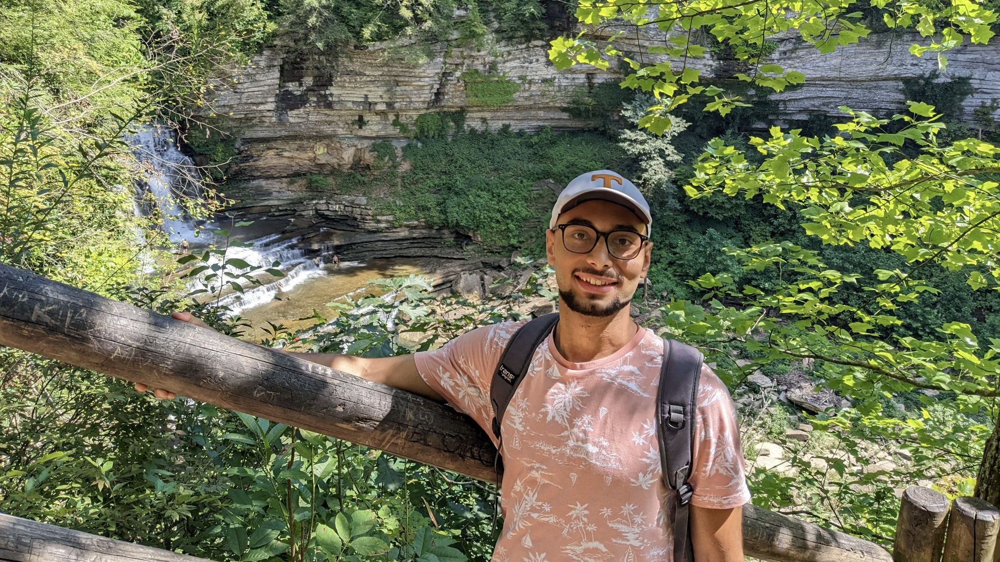
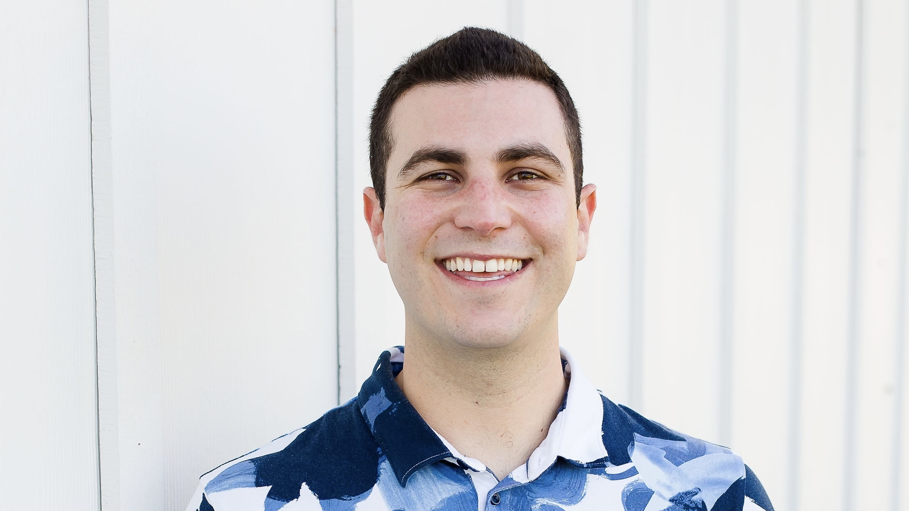

My name is Sarra! I am a Senior studying Marketing and Computer Science at MTSU! I worked on the design of the Home and About page! The goal of this website is to spread awareness of what really happens in Brazil since not many people are aware of it! Brazil is known for it's beauty, but we can always help people, and make it even more beautiful.

-Mark Eskander
Olá, Hola, Hello! My name is Mark Eskander; I'm currently a Junior studying Computer Science at MTSU. I'm a culture and language enthusiast and I love to try new foods. This website serves more than just educational purposes, but it's to inspire people to get involved to make a difference in the community around them. No matter how big or small, we can always lend a helping hand to those in need. Brazil is by no means a desperate country, but they have definitely seen better days. Let's stand together against income disparity around the globe!
-Austin Day
My name is Austin! I was born and raised in Memphis, TN and came to MTSU in Fall 2021 to pursue a degree in Information Systems. I wanted to create this website in order to spread awareness about Brazil and its several issues effecting the both the economy and the environment.

-Matthew Trevisano
My name is Matthew! I recently moved to Middle Tennessee to continue my education in Business Administration with a concentration in Information Systems. I wanted to create this website to provide education regarding Brazil's conditions and life within the country. Often we hear more about countries problems rather than how they are working to fix them so I wanted to provide a current outlook of the country as well as policies and measures being implemented to improve the future of Brazil.
RESOURCES
Here are some resources you can go to, and find more information about the current issues in Brazil or donate